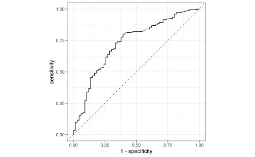

Capítulo 6 Regresión Logística
Asuma que ahora la variable \(Y\) solo contiene valores 0 o 1 y queremos hacer la regresión
\[\begin{equation*} Y = \beta_{0} +\beta_{1} X_{1} + \cdots + \beta_{p} X_{p} + \varepsilon. \end{equation*}\]
El problema es que \(\mathbb{E}\left[Y | \boldsymbol{X}\right] = \mathbb{P}\left(Y=1\vert \boldsymbol{X}\right)\) y se debe cumplir que
\[\begin{equation*} 0\leq \mathbb{E}\left[Y | \boldsymbol{X}\right]\leq 1. \end{equation*}\]
pero el rango de \(\beta_{0} +\beta_{1} X_{1} + \cdots + \beta_{p} X_{p}\) es todo \(\mathbb{R}\).
Solución es cambiar \(Y\) por \(g(Y)\in [0,1]\).
\[\begin{equation*} g(X) = \frac{1}{1+e^{-(\beta_{0} +\beta_{1} X_{1} + \cdots + \beta_{p} X_{p})}} \end{equation*}\]
## PassengerId Survived Pclass Name
## Min. : 1.0 Min. :0.0000 Min. :1.000 Length:891
## 1st Qu.:223.5 1st Qu.:0.0000 1st Qu.:2.000 Class :character
## Median :446.0 Median :0.0000 Median :3.000 Mode :character
## Mean :446.0 Mean :0.3838 Mean :2.309
## 3rd Qu.:668.5 3rd Qu.:1.0000 3rd Qu.:3.000
## Max. :891.0 Max. :1.0000 Max. :3.000
##
## Sex Age SibSp Parch
## Length:891 Min. : 0.42 Min. :0.000 Min. :0.0000
## Class :character 1st Qu.:20.12 1st Qu.:0.000 1st Qu.:0.0000
## Mode :character Median :28.00 Median :0.000 Median :0.0000
## Mean :29.70 Mean :0.523 Mean :0.3816
## 3rd Qu.:38.00 3rd Qu.:1.000 3rd Qu.:0.0000
## Max. :80.00 Max. :8.000 Max. :6.0000
## NA's :177
## Ticket Fare Cabin Embarked
## Length:891 Min. : 0.00 Length:891 Length:891
## Class :character 1st Qu.: 7.91 Class :character Class :character
## Mode :character Median : 14.45 Mode :character Mode :character
## Mean : 32.20
## 3rd Qu.: 31.00
## Max. :512.33
## titanic <- titanic %>% select(Survived, Fare, Age) %>%
drop_na()
fit_lm <- lm(Survived ~ Fare + Age, data = titanic)
En lugar de esto, definamos el siguiente modelo
\[\begin{equation*} Y \sim Bernoulli (g_{\beta}(\boldsymbol{X})) \end{equation*}\]
con \(g_{\beta}(\boldsymbol{X}) = \mathbb{P}\left(Y=1 \vert \boldsymbol{X}\right)\).
En R usaremos la función glm
##
## Call:
## glm(formula = Survived ~ Fare + Age, family = "binomial", data = titanic)
##
## Deviance Residuals:
## Min 1Q Median 3Q Max
## -2.7605 -0.9232 -0.8214 1.2362 1.7820
##
## Coefficients:
## Estimate Std. Error z value Pr(>|z|)
## (Intercept) -0.417055 0.185976 -2.243 0.02493 *
## Fare 0.017258 0.002617 6.596 0.0000000000423 ***
## Age -0.017578 0.005666 -3.103 0.00192 **
## ---
## Signif. codes: 0 '***' 0.001 '**' 0.01 '*' 0.05 '.' 0.1 ' ' 1
##
## (Dispersion parameter for binomial family taken to be 1)
##
## Null deviance: 964.52 on 713 degrees of freedom
## Residual deviance: 891.34 on 711 degrees of freedom
## AIC: 897.34
##
## Number of Fisher Scoring iterations: 5
Nota: Existen otros tipos de regresión y estas se definen a través del parámetro family. En este curso solo nos enfocaremos en el parámetro family="binomial".
6.1 Razón de proporción
Defina
\[\begin{equation*} O(X) = \frac{g(X)}{1-g(X)} = e^{\beta_{0} +\beta_{1} X_{1} + \cdots + \beta_{p} X_{p}} \in [0,1]. \end{equation*}\]
Es la relación de obtener 1 ó 0.
Por suponga que \(\mathbb{P}\left(Y=1\vert \boldsymbol{X}\right) = g(\boldsymbol{X}) = 0.8\) es la probabilidad de pagar la tarjeta de crédito y \(1-g(\boldsymbol{X}) = 0.2\) es la probabilidad de no pagar.
Se puede escribir \(O(X) = \frac{0.8}{0.2} = \frac{4}{1}\), lo que dice que es 4 veces más probable de pagar la tarjeta que no pagarla.
6.2 Máxima verosimilitud
Los valores de \(\beta\) se pueden encontrar por máxima verosimilitud.
Defina \(p(\boldsymbol{X}) = \mathbb{P}\left(Y=1\vert \boldsymbol{X}\right)\).
La verosimilitud es:
\[ L\left(\beta\right)=\prod_{i=1}^{n} p\left(\boldsymbol{X}_{i}\right)^{Y_{i}}\left(1-p\left(\boldsymbol{X}_{i}\right)\right)^{1-Y_{i}} \]
\[\begin{align*} \ell\left(\beta\right) &=\sum_{i=1}^{n} Y_{i} \log p\left(\boldsymbol{X}_{i}\right)+\left(1-Y_{i}\right) \log \left(1-p\left(\boldsymbol{X}_{i}\right)\right) \\ &=\sum_{i=1}^{n} \log \left(1-p\left(\boldsymbol{X}_{i}\right)\right)+\sum_{i=1}^{n} Y_{i} \log \frac{p\left(\boldsymbol{X}_{i}\right)}{1-p\left(\boldsymbol{X}_{i}\right)} \\ &=\sum_{i=1}^{n} \log \left(1-p\left(\boldsymbol{X}_{i}\right)\right)+\sum_{i=1}^{n} Y_{i}\left(\boldsymbol{X}_{i} \cdot \beta\right) \\ &=\sum_{i=1}^{n}-\log \left(1+e^{\boldsymbol{X}_{i} \cdot \beta}\right)+\sum_{i=1}^{n} Y_{i}\left(\boldsymbol{X}_{i} \cdot \beta\right) \end{align*}\]
\[\begin{align*} \frac{\partial \ell}{\partial \beta} &=-\sum_{i=1}^{n} \frac{1}{1+e^{\boldsymbol{X}_{i} \cdot \beta}} e^{\boldsymbol{X}_{i} \cdot \beta} \boldsymbol{X}_{i}+\sum_{i=1}^{n} Y_{i} \boldsymbol{X}_{i} \\ &=\sum_{i=1}^{n}\left(Y_{i}-p\left(\boldsymbol{X}_{i}\right)\right) \boldsymbol{X}_{i} \\ &= X^{\top}(Y-p(\boldsymbol{X})) \end{align*}\]
Solución: Netwon-Raphson
Muestre que
\[\begin{equation*} \frac{\partial^{2} \ell}{\partial \beta^{2}} = -\boldsymbol{X}W\boldsymbol{X} \end{equation*}\]
donde \(W = \mathrm{diag}{p(\boldsymbol{X}_{i})(1-p(X_{i}))}\).
El algoritmo de Netwon-Raphson usa el hecho que
\[\begin{equation*} \beta^{(t)} = \beta ^{(t-1)} - \left( \frac{\partial^{2} \ell}{\partial \beta^{2}}\right)^{-1} \frac{\partial \ell}{\partial \beta} \Bigg\vert_{\beta ^{(t-1)}} \end{equation*}\]
Muestre que
\[\begin{equation*} \beta^{(t)} = \left( X^{\top}WX \right)^{-1}X^{\top}Z_{\beta}, \end{equation*}\]
donde \(Z_{\beta} = Z\beta + W^{-1}_{\beta} (Y-p(X))\).
A esta técnica se le conoce como mínimos cuadrados ponderados e iterados o en inglés Iteratively Re-Weighted Least Squares (IRLS).
Se comienza con \(\beta^{(0)}\) cualquiera y se va iterando \(\beta^{(1)}, \beta^{(2)}, \ldots\) hasta encontrar la convergencia.
Para cada \(t\) se resueelve el problema
\[\begin{equation*} \beta ^{t} = \operatorname{argmin}_{\beta} (Z-X\beta)^{\top}W(Z-X\beta). \end{equation*}\]
6.2.1 Residuos
La suma al cuadrado de los residuos se convierte en un estadístico de pearson:
\[\begin{align*} \chi^{2}=\sum_{i=1}^{n} \frac{\left(Y_{i}-\hat{p}(X_{i})\right)^{2}}{\hat{p}(X_{i})(\hat{p}(X_{i}))} \end{align*}\]
la cual es una aproximación cuadrática de la devianza (Curso pasado).
\[\begin{equation*} D = -2 \ell(\hat{\beta}) \end{equation*}\]
Además tenemos los resultados que
- \(\hat{\beta} \xrightarrow{\mathbb{P}} \beta\)
- \(\hat{\beta} \xrightarrow{\mathcal{D}} \mathcal{N}\left(\beta,(X^{\top}WX)^{-1}\right)\) (Prueba de Wald)
- Se pueden comparar un modelo completo con un reducido a través de pruebas asintóticas LRT \[\begin{equation*} D_c -D_r \sim =\chi^{2}_{df_{c}} - \chi^{2}_{df_{r}}. \end{equation*}\]
6.3 Diágnosticos del modelo
CUIADADO: La función glm no tiene un equivalente de plot como en los modelos lineales. De esta forma, si se aplica plot a un objeto glm solo generará los mismos chequeos que el capítulo anterior. Sin embargo estos podrían estar equivocados si no se leen con cuidado.
6.3.1 Supuesto de linealidad
Este supuesto debe ser chequeado con la función logit de las respuestas.
##
## Call:
## glm(formula = Survived ~ Fare + Age, family = "binomial", data = titanic)
##
## Deviance Residuals:
## Min 1Q Median 3Q Max
## -2.7605 -0.9232 -0.8214 1.2362 1.7820
##
## Coefficients:
## Estimate Std. Error z value Pr(>|z|)
## (Intercept) -0.417055 0.185976 -2.243 0.02493 *
## Fare 0.017258 0.002617 6.596 0.0000000000423 ***
## Age -0.017578 0.005666 -3.103 0.00192 **
## ---
## Signif. codes: 0 '***' 0.001 '**' 0.01 '*' 0.05 '.' 0.1 ' ' 1
##
## (Dispersion parameter for binomial family taken to be 1)
##
## Null deviance: 964.52 on 713 degrees of freedom
## Residual deviance: 891.34 on 711 degrees of freedom
## AIC: 897.34
##
## Number of Fisher Scoring iterations: 5probs <- predict(fit_glm, type = "response")
df <- titanic %>% select(Fare, Age) %>% mutate(logit = qlogis(probs)) %>%
pivot_longer(names_to = "predictores", values_to = "valores.ajustados",
-logit)
ggplot(df, aes(valores.ajustados, logit)) + geom_point(size = 0.5,
alpha = 0.5) + geom_smooth(method = "loess") +
theme_bw() + facet_wrap(~predictores, scales = "free")
6.3.2 Valor de gran influencia


library(broom)
fit_data <- broom::augment(fit_glm) %>% mutate(indice = 1:n())
fit_data %>% top_n(3, .cooksd)## # A tibble: 3 x 11
## Survived Fare Age .fitted .se.fit .resid .hat .sigma .cooksd .std.resid
## <int> <dbl> <dbl> <dbl> <dbl> <dbl> <dbl> <dbl> <dbl> <dbl>
## 1 0 263 19 3.79 0.631 -2.76 0.00862 1.12 0.129 -2.77
## 2 0 248. 24 3.43 0.584 -2.63 0.0103 1.12 0.109 -2.65
## 3 0 263 64 3.00 0.615 -2.47 0.0171 1.12 0.118 -2.49
## # … with 1 more variable: indice <int>ggplot(fit_data, aes(indice, .std.resid)) + geom_point(aes(color = as.factor(Survived)),
alpha = 0.5) + theme_bw()## # A tibble: 0 x 11
## # … with 11 variables: Survived <int>, Fare <dbl>, Age <dbl>, .fitted <dbl>,
## # .se.fit <dbl>, .resid <dbl>, .hat <dbl>, .sigma <dbl>, .cooksd <dbl>,
## # .std.resid <dbl>, indice <int>6.4 Predicción y poder de clasificación
Si queremos predecir posibles resultados con nuestro modelo logístico, debemos asegurarnos que el error no sea “muy grande”.
Ahora el error en este caso, se interpreta diferente que en regresión lineal clásica ya que nuestra salida solamente serán 0’s o 1’s.
Primero recordemos que el modelo predictivo estaría definido por
\[\begin{equation*} \hat{p}(X)=\frac{1}{1+e^{-(\hat{\beta}_{0}+\hat{\beta}_{1} X_{1}+\cdots+\hat{\beta}_{p} X_{p})}} \end{equation*}\]
donde los \(\beta\)’s son estimados usando IRLS.
Ahora imaginemos que tenemos un conjunto de datos nuevo \((X^{*}_{1},\ldots,X^{*}_{p})\) y queremos ver que tipo de respuesta \(Y^{*}\) obtenemos (0 o 1).
Obviamente nuestro modelo puede equivocarse y darnos una respuesta errónea. Por ejemplo digamos que en el caso del titanic uno esperaría que personas más jóvenes y que hayan pagado más por su tiquete tengan mayor probabilidad de sobrevivencia.
Entonces tenemos realmente 4 opciones
| Clase | Predicción | |||
| 0 | 1 | |||
| Clase | 0 | Verdaderos Negativos. (TN) | Falsos Positivos (FP) | \(N\) |
| Real | 1 | Falsos Negativos (FN) | Verdaderos Positivos (TP) | \(P\) |
| Total | \(N^{*}\) | \(P^{*}\) |
predict_numeric <- predict(fit_glm, type = "response")
predict_01 <- as.numeric(predict_numeric >= 0.5)
matriz_confusion <- table(titanic$Survived, predict_01)
colnames(matriz_confusion) <- c("N", "P")
rownames(matriz_confusion) <- c("N", "P")
matriz_confusion## predict_01
## N P
## N 380 44
## P 201 89Para entender la siguiente tabla vamos a definir los siguietes términos:
- Exactitud (Accuracy)
- Es la tasa de todos los individuos bien etiquetados \((TP+TN)/(TP+TN+FN+FP)\).
- Precisión
- Es la tasa de elementos etiquetados 1 correctamente con respecto a los que fueron etiquetados 1 \(Precisión = TP/P^*\)
- Sensibilidad (Exhaustividad)
- Es la tasa de elementos etiquetados 1 correctamente con respecto a los que realmente son 1. \(Sensibilidad = TP/P\)
- F-Score
- Es la media armónica entre la precisión y la sensibilidad. \(F-Score = 2*(Sensibilidad * Precisión)/(Sensibilidad + Precisión)\)
- Especificidad
- Es la tasa de elementos etiquetados 0 que realmente estaban etiquetados como 1.
Entonces esto nos da las siguientes posibilidades.
| Tipo | Cálculo | Sinónimos |
|---|---|---|
| Tasa Falsos Positivos | \(FP/N\) | Error Tipo I, 1-Especificidad |
| Tasa Verdaderos Positivos | \(TP/P\) | 1-Error Tipo II, Poder, Sensibilidad, Exhaustividad (Recall) |
| Valor de Predicción Positivos | \(TP/P^{*}\) | Precisión, 1 - Proporción de Falsos Descubrimientos |
| Valor de Predicción Negativos | \(TN/N^{*}\) | |
| F-Score | \(\frac{2(TP/P^{*} \times TP/P )}{(TP/P^{*} + TP/P )}\) |
CUIDADO:
- Exactitud funciona bien cuando los datos son simétricos (igual número de FP y FN).
- F-Scores es cuando los datos son asimétricos
- Precisión es qué tan seguro se está de los verdaderos positivos.
- Sensibilidad es que tan seguro es que no se está perdiendo ningún positivo.
En un modelo se debe escoger entre sensibilidad y precisión de acuerdo a ciertas ideas:
- Sensibilidad es importante si la ocurrencia de falsos negativos es inaceptable. Por ejemplo las prueba COVID-19. Posiblemente se obtendrá más falsos positivos pero este caso es aceptable.
- Precisión es importante si se quiere estar más seguro de los verdaderos positivos. Por ejemplo detectar spam en correos electrónicos.
- Especificidad es importante si lo que se quiere es cubrir todos los verdaderos negativos, es decir, que no se quieren falsas alarmas. Por ejemplo se hacen pruebas de detección de drogas y si es positivo va a la cárcel. Los falsos positivos son intolerables.
## [1] 380## [1] 89## [1] 44## [1] 201## [1] 0.6568627## [1] 0.6691729## [1] 0.3068966## [1] 0.4208038## [1] 0.89622646.4.1 Curva ROC
Un excelente clasificador debería detectar correctamente los verdaderos positivos (TP) e ignorar los falsos positivos (FP).
Puesto de otra forma, si el clasificador es malo, los verdaderos positivos serían indistingibles de los falsos positivos.
La curva ROC (Receiver Operation Curve) gráfica la Tasa Falsos Positivos vs Sensibilidad del modelo.
library(ROCR)
logist.pred.ROCR <- prediction(predict_numeric, titanic$Survived)
logist.perf <- performance(logist.pred.ROCR, "tpr",
"fpr")
plot(logist.perf)
abline(0, 1, col = "red")
## [[1]]
## [1] 0.7063313PELIGRO
Aquí estamos chequeando el poder de clasificación del modelo, con los mismos datos que usamos para ajustar el modelo. Es decir, le estamos diciendo al modelo que compruebe la veracidad de la clasificación que ya hizo previamente.
Esto es incorrecto, ya que el modelo ya sabe “las respuestas” y no estamos midiendo su poder de clasficación.
Para resolver esto, debemos tomar otra muestra de prueba (training) que nos diga si el ajuste que hicimos es correcto.
titanic$id <- 1:nrow(titanic)
train <- titanic %>% sample_frac(0.75)
test <- titanic %>% anti_join(train, by = "id")predict_numeric <- predict(fit_glm, newdata = test,
type = "response")
predict_01 <- as.numeric(predict_numeric >= 0.5)
matriz_confusion <- table(test$Survived, predict_01)
colnames(matriz_confusion) <- c("N", "P")
rownames(matriz_confusion) <- c("N", "P")
matriz_confusion## predict_01
## N P
## N 93 9
## P 57 19## [1] 93## [1] 19## [1] 9## [1] 57## [1] 0.6292135## [1] 0.6785714## [1] 0.25## [1] 0.3653846## [1] 0.9117647logist.pred.ROCR <- prediction(predict_numeric, test$Survived)
logist.perf <- performance(logist.pred.ROCR, "tpr",
"fpr")
plot(logist.perf)
abline(0, 1, col = "red")
## [[1]]
## [1] 0.71388036.5 Ejercicios
- Del libro (James et al. 2013):
- Capítulo 4: 1, 6, 10, 11. (En esta sección no vimos LDA, QDA ni k-vecinos más cercanos, así que ignoren esas partes y concentrense en hacer los análisis correctos para regresión logística).
References
James, Gareth, Daniela Witten, Trevor Hastie, and Robert Tibshirani. 2013. An Introduction to Statistical Learning. Vol. 103. Springer Texts in Statistics. New York, NY: Springer New York. https://doi.org/10.1007/978-1-4614-7138-7.